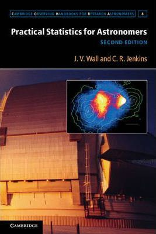
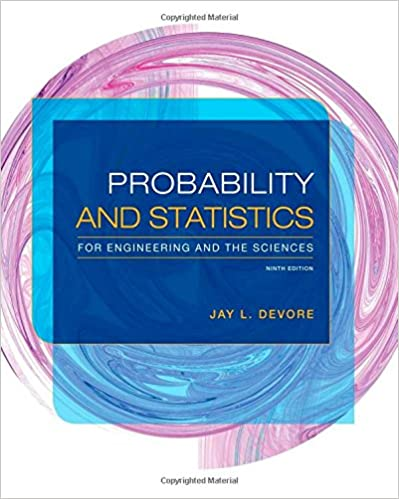

LFIS325: Estadística para Ciencias Físicas
Descripción del curso
Es un curso teórico/práctico de modalidad presencial, de nivel intermedio, cuya misión es introducir al estudiante a las principales herramientas de análisis. El curso está orientado a desarrollar en el estudiante la capacidad de transformar los datos de que dispone tanto para extraer información útil como también para facilitar las conclusiones. Aprenderá los conceptos de la teoría de la probabilidad y la inferencia estadística que se utilizan para interpretar datos experimentales. Abordará los problemas tanto desde una perspectiva teórica como con trabajos prácticos.
Horario de clases
| Día | Horario | Lugar | |
|---|---|---|---|
| Cátedra #1 | Jueves | 08:30 am - 10:00 am | Juan Mouat |
| Cátedra #2 | Viernes | 14:30 pm - 16:00 pm | Juan Mouat |
| Cátedra #3 | Viernes | 16:15 pm - 17:45 pm | Juan Mouat |
Instructor
Prof. Eloy Alvarado Narváez es candidato a Doctor en estadística en la Universidad de Valparaíso en el área de estadística espacial, particularmente en el estudio de campos aleatorios y cópulas. Es Licenciado en Estadística de la Pontificia Universidad Católica de Valparaíso. Actualmente, presta servicios de consultoría al Instituto de Fomento Pesquero en modelamiento espacio-temporal.
Pre-requisitos
Oficialmente, el curso requiere la aprobación de Calculo III y Física computacional III.
Softwares
Para la mayoría de las aplicaciones utilizaremos R, por lo que se sugiere utilizar un IDE como RStudio.
Para la entrega de informes y talleres que requieran uso de programación, se recomienda el uso de Rmarkdown, Jupyter Notebook o \(\LaTeX\) para la confección de documentos a entregar.
Bibliografía
La bibliografía principal del curso es:


